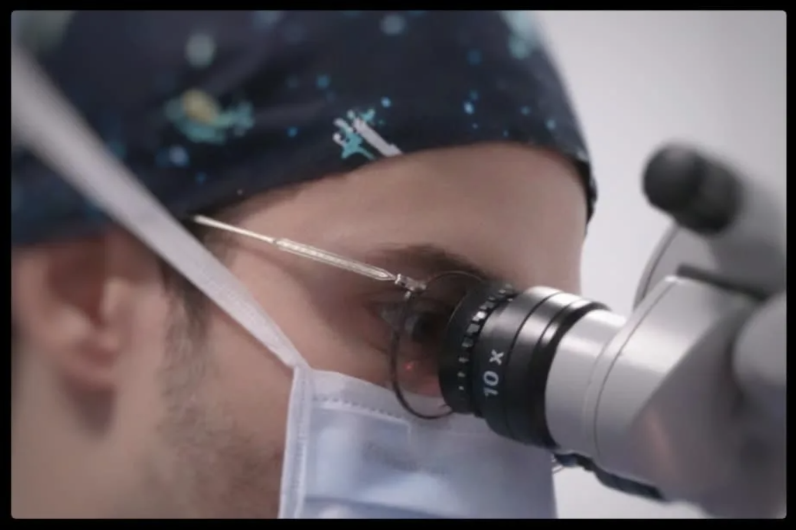

Dr Alexandre Majoulet
Chirurgien Ophtalmologue spécialiste de la rétine & de la cataracte
Co-fondateur du Cabinet Ophtalife, Praticien Contractuel au CHNO des Quinze-Vingts (service du Pr Baudouin), ancien interne des Hôpitaux de Paris, FEBO et titulaire du DIU de Chirurgie Vitréo-Rétinienne.
Je vous accueille à Boulogne-Billancourt pour des consultations spécialisées et des interventions chirurgicales. J'assure également le suivi ophtalmologique habituel.
Mes chirurgies sont réalisées à la Clinique Jouvenet à Paris 16.
Spécialités
Une prise en charge complète des pathologies rétiniennes et de la cataracte, avec les techniques les plus récentes.
Suivi ophtalmologique
Consultation ophtalmologique complète, prescription de lunettes et lentilles de contact, dépistage des pathologies oculaires (glaucome, DMLA, rétinopathie diabétique).
Chirurgie de la rétine
Chirurgie vitréo-rétinienne : décollement de rétine, membrane épirétinienne, trou maculaire, hémorragie du vitré. Vitrectomie mini-invasive de dernière génération.
Chirurgie de la cataracte
Phacoémulsification par micro-incision avec implant personnalisé (monofocal, multifocal, torique). Récupération visuelle rapide et indolore.
Injections intravitréennes
IVT d'anti-VEGF et de corticoïdes pour le traitement de la DMLA exsudative, de l'œdème maculaire diabétique et des occlusions veineuses rétiniennes.
DMLA
Diagnostic et traitement de la dégénérescence maculaire liée à l'âge (forme sèche et exsudative). Suivi par OCT et injections intravitréennes d'anti-VEGF.
Glaucome
Dépistage, suivi et traitement du glaucome. Mesure de la pression intraoculaire, champ visuel, OCT des fibres nerveuses et prise en charge médicale ou chirurgicale.

Formation & expérience
Un parcours hospitalier d'excellence au sein des centres de référence en ophtalmologie.
Le Dr Alexandre Majoulet est chirurgien ophtalmologue, spécialisé en pathologie et chirurgie vitréo-rétinienne. Ancien interne des Hôpitaux de Paris, il exerce actuellement comme Praticien Contractuel au Centre Hospitalier National d'Ophtalmologie des Quinze-Vingts, au sein du service du Pr Christophe Baudouin, centre de référence national en ophtalmologie.
Titulaire du DES d'Ophtalmologie (Université de Versailles-Saint-Quentin-en-Yvelines, 2023), du DIU de Chirurgie Vitréo-Rétinienne (Université Paris-Saclay — Paris 11, 2024) et Fellow of the European Board of Ophthalmology (FEBO) depuis 2022, il a acquis une expertise pointue dans la prise en charge chirurgicale et médicale des pathologies rétiniennes complexes, de la cataracte et du glaucome.
Il est l'auteur et co-auteur de plusieurs publications scientifiques dans des revues internationales à comité de lecture, indexées sur PubMed (Journal of Clinical Medicine, Journal Français d'Ophtalmologie, Documenta Ophthalmologica), et membre de la Société Française d'Ophtalmologie (SFO). Voir la bibliographie complète →
Co-fondateur du Cabinet Ophtalife, le Dr Majoulet exerce à Boulogne-Billancourt où il propose des consultations spécialisées ainsi que des interventions chirurgicales. Les interventions sont réalisées à la Clinique Jouvenet à Paris 16.
Praticien Contractuel — CHNO des Quinze-Vingts
Service d'ophtalmologie du Pr Baudouin — Activité de rétine chirurgicale et d'urgences ophtalmologiques
Co-fondateur — Cabinet Ophtalife
Consultations et chirurgie ophtalmologique à Boulogne-Billancourt — Secteur 2 conventionné (OPTAM)
DIU Chirurgie Vitréo-Rétinienne
Université Paris-Saclay (Paris 11) — Diplôme Inter-Universitaire de chirurgie vitréo-rétinienne
DES d'Ophtalmologie
Université de Versailles-Saint-Quentin-en-Yvelines (UVSQ) — Diplôme d'Études Spécialisées
Assistant — CHNO des Quinze-Vingts
Assistanat en ophtalmologie dans le service du Pr Christophe Baudouin (Quinze-Vingts, Paris)
FEBO — European Board of Ophthalmology
Fellow of the European Board of Ophthalmology (Bruxelles) — certification européenne en ophtalmologie
Ancien interne des Hôpitaux de Paris
Internat en ophtalmologie au sein de l'Assistance Publique – Hôpitaux de Paris (AP-HP)
Publications scientifiques
Auteur et co-auteur d'articles dans des revues indexées PubMed (J Clin Med, J Fr Ophtalmol, Doc Ophthalmol) — ORCID : 0000-0003-1116-1937
Informations pratiques
Cabinet Ophtalife — Boulogne-Billancourt
Adresse
37 Rue d'Aguesseau
92100 Boulogne-Billancourt
Téléphone
Rendez-vous
En ligne via Doctolib
ou par téléphone
Honoraires
Secteur 2 — Conventionné
Prise en charge Sécurité sociale + mutuelle
Accès
Métro Boulogne — Jean Jaurès (ligne 10)
Métro Marcel Sembat (ligne 9)
Bus 123, 126, 175